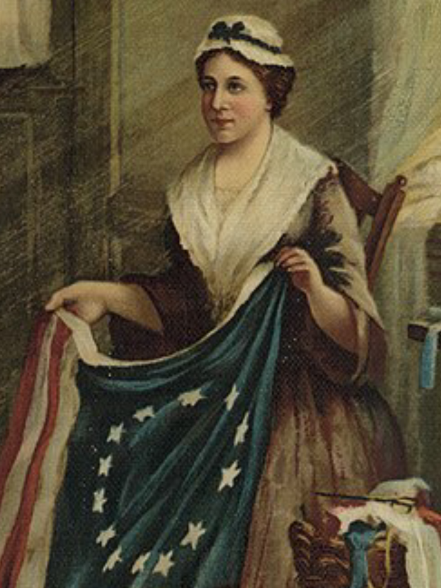

מקור: Wikimedia Commons · Public Domain · תיאור: Depiction of Betsy Ross in 1893 · קובץ: Betsy Ross 1893.png
בטסי רוס
בטסי רוס מזוהה במסורת העממית האמריקאית כתופרת הדגל הראשון של ארצות הברית. לפי הסיפור המפורסם, ג'ורג' וושינגטון ואנשי ועדה נוספים הגיעו אליה וביקשו שתכין דגל חדש עבור האומה המתהווה.
הסיפור הזה הפך לחלק עמוק מן הזיכרון הלאומי, אף שהיסטוריונים מתייחסים אליו בזהירות מפני שהעדויות הישירות מאוחרות ומוגבלות. חשיבותה באתר היא בעיקר כמי שמייצגת את הצד העממי, הביתי והאזרחי של סיפור הדגל.
חשוב לדעת: בטסי רוס היא דמות מרכזית במסורת ובמיתוס האמריקאי סביב הדגל, גם אם חלק מן הפרטים ההיסטוריים אינם מוכחים בוודאות.